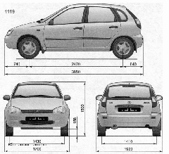
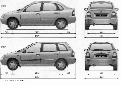

Общие сведения об автомобилеВ руководстве рассмотрены устройство, техническое обслуживание и ремонт автомобилей семейства LADA KALINA. Автомобили выпускаются с тремя типами кузова (седан, хэтчбек и универсал) и двумя типами двигателей. Большинство устанавливаемых на автомобили узлов и агрегатов унифицированы (кроме оборудования задней части кузова). Устройство, техническое обслуживание и ремонт показаны в основных главах руководства на примере модели ВАЗ-11194 — автомобиля с кузовом хэтчбек и с 16 —клапанным двигателем l,4i (11194). Особенности устройства и ремонта различных модификаций автомобиля LADA KALINA представлены в следующей статье руководства. 

|